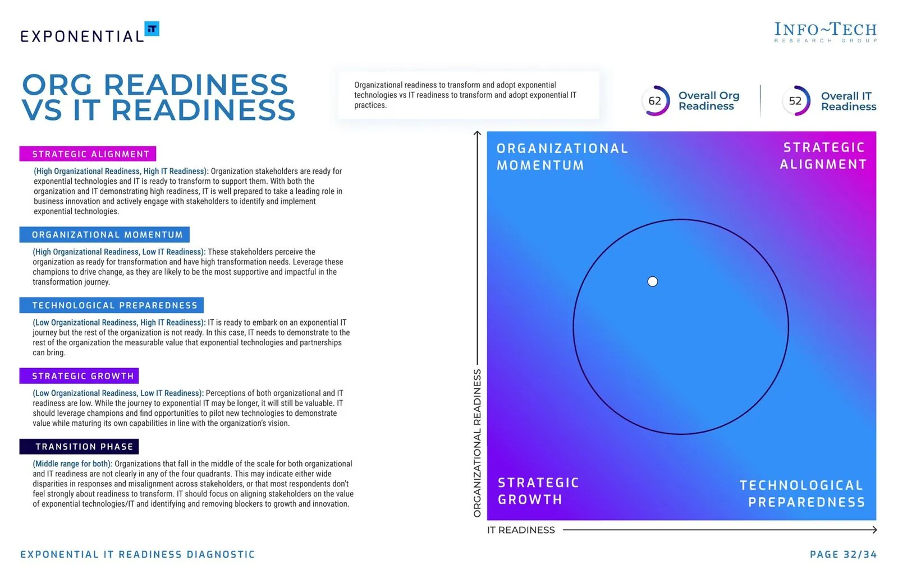

Diagnostic Reports
Report designs that turn diagnostic survey results into clear findings IT leaders can act on.
- Infotech
- 2024–2025
- FigmaIllustratorPhotoshop
- Multi-page reports
About this work
What Infotech diagnostics are: who takes them, what the report tells them, and how it's used.
My role and process: what you designed (layouts, charts, templates), who you worked with, and key decisions.
Selected reports
Exponential IT Readiness Diagnostic
A report comparing how ready the organization is for technology-driven transformation with how ready IT is to lead it, scored across core IT domains.
I designed the complete report and was partway through coding it when the project was cancelled, so this design was never published. Shown with sample data.


Highest and lowest scores are split so disagreement between leaders stands out.


The headline finding: where the organization sits on org vs IT readiness, and what that means.

Open-ended feedback, kept readable with clear attribution for each leader.
REPORT 2 NAME
What this diagnostic measures and who reads the report.
REPORT 3 NAME
What this diagnostic measures and who reads the report.
Created for Infotech. Shown with sample data.